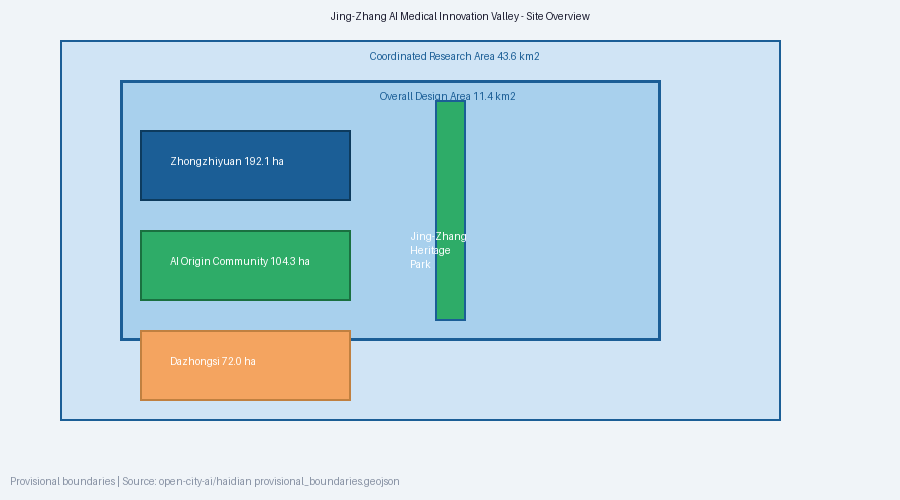
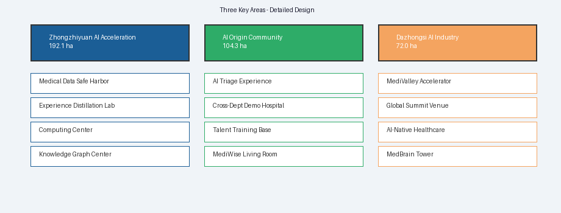
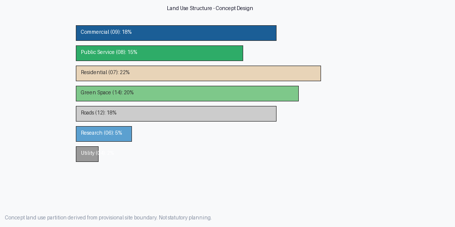
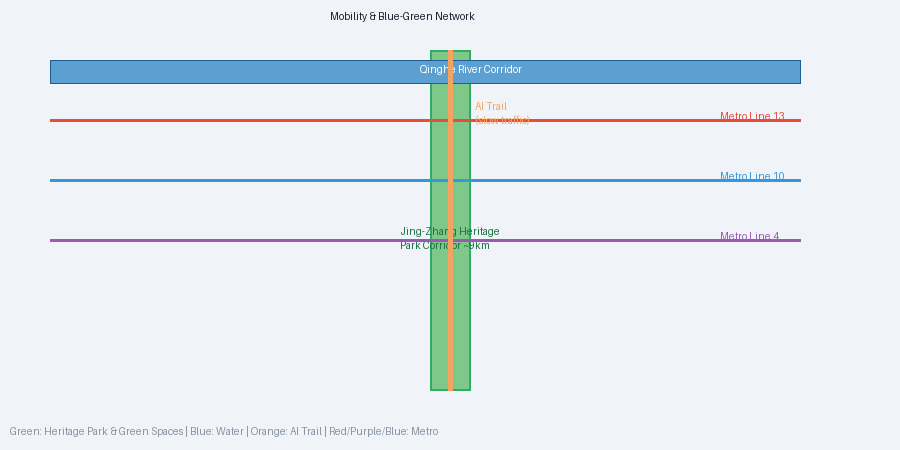
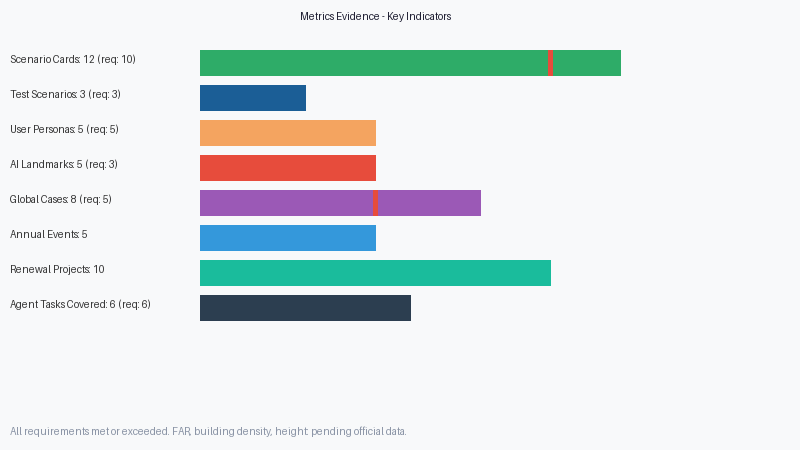

Jing-Zhang AI Medical Innovation Valley
AI + Public Services: Urban Design Centered on Healthcare System Intelligence
Design Basis and Data Inventory
This proposal is based on the Centennial Jing-Zhang AI Innovation Belt Urban Design International Competition Pre-qualification Announcement (Beijing Municipal Commission of Planning and Natural Resources, Haidian Branch, 2026-05-09), the Global Agent Open Call for Urban Design Taskbook Excerpt (2026-05-18), "Three Areas Two Wings" policy, and Haidian District "1+X+1" modern industrial system. Supplementary references include national medical AI policies, global medical AI academic literature, and international benchmark cases such as Mayo Clinic Platform. All sources are fully recorded in sources.json.
Three-Level Scope Framework
The proposal covers three spatial levels: Coordinated Research Area (~43.6km²), Overall Design Area (~11.4km²), and Key Detailed Design Areas (~368.4ha total: Zhongzhiyuan 192.1ha + AI Origin Community 104.3ha + Dazhongsi 72.0ha). Official precise GIS/CAD polygons are not yet publicly available; all areas are provisional calculations pending official data release.

Coordinated Research Area Industry and Future City Study
Under Haidian's "1+X+1" industrial framework, this proposal positions AI + Healthcare as the core distinctive industry direction for the Jing-Zhang AI Innovation Belt. Haidian hosts premier medical resources (Peking University Third Hospital, Haidian Hospital, etc.) and top AI research institutions (Tsinghua, Peking University, CAS), creating unique AI-medical convergence potential. The proposal establishes the Medical Collective Intelligence Infrastructure (MCII) with three technological pillars: Federated Learning Network for medical data, Doctor Experience Distillation Platform, and AI Triage & Cross-Department Collaboration System, transforming tacit physician knowledge into trainable explicit intelligence systems.
Overall Design Area Urban Renewal and Regulatory-Plan-Level Urban Design
The "One Valley, Three Cores, Two Wings" spatial structure extends ~9km along the Jing-Zhang Heritage Park. The valley is the JZ-MedAI Valley brand; three cores from north to south are the Zhongzhiyuan AI Medical Foundation Model Area, AI Origin Community Medical Experience Innovation Area, and Dazhongsi Medical AI Industry Cluster; two wings are the Zhongguancun Sci-Tech Service Wing and Xiaoyuehe Scenario Enablement Wing. Brand system: "Jing-Zhang AI Medical Innovation Valley" (JZ-MedAI Valley), core brand "MediWise Jing-Zhang", technology platform "MedBrain". Logo concept merges Jing-Zhang railway track intersection with DNA double helix, forming a "+" symbol. Color system: Jing-Zhang Blue (#1B5E96) + Life Green (#2EAC68) + Wisdom Gold (#F4A460).
Key Area Detailed Design
Zhongzhiyuan AI Medical Foundation Model Area (North Core, ~192.1ha): Global center for medical AI foundation model training and validation. Core functions: Medical Data Safe Harbor (federated learning node cluster + privacy computing sandbox + data governance center), Doctor Experience Distillation Lab (cognitive task analysis + clinical pathway modeling + knowledge graph construction), full-stack sovereign computing center. Low-density campus layout with "neural network" topology.
Beijing AI Origin Community Medical Experience Innovation Area (Central Core, ~104.3ha): Center for AI medical innovation experience, talent development, and public engagement. Core functions: AI Triage Experience Center, Cross-Department AI Collaborative Demonstration Hospital, Medical AI Talent Training Base, MediWisdom Public Living Room.
Dazhongsi Medical AI Industry Cluster (South Core, ~72.0ha): Center for medical AI industrialization, global exhibition, and commercial transformation. Core functions: Medical AI Startup Accelerator, Global Medical AI Summit Permanent Venue, AI-native healthcare consumption scenarios. High-rise + podium mixed form, TOD development at Dazhongsi Station.

AI Innovation Ecosystem, Talent Personas, and AI+ Scenarios
AI Innovation Ecosystem: 8 global medical AI case studies (Mayo Clinic Platform, NHS AI Lab, Singapore National MedAI Centre, Tempus, Tuihuo/Shukun Technology, Shenzhen People's Hospital AI Emergency, Yidu Cloud, Google Health/DeepMind Health). "Three-layer Four-dimension" ecosystem map: Infrastructure Layer (compute + data + knowledge graph), Capability Transformation Layer (talent + experience + clinical validation), Industry Acceleration Layer (incubation + exhibition + globalization).
User Personas (5 categories): Lost patient (28yo tech worker), Primary care physician lacking specialist support, Senior expert wasting time on common cases, Chronic disease patient (65yo retiree), Medical AI entrepreneur needing clinical validation.
AI + Medical Scenario Cards (12): AI General Triage Assistant, Medical Record Deep Understanding Engine, Cross-Department MDT Collaboration Panel, Doctor Experience Digital Twin, Primary Care AI Assistant, AI Chronic Disease Manager, AI Imaging Screening Network, AI Emergency Triage, AI Drug Adverse Reaction Monitoring, AI Mental Health Intervention, Rare Disease Diagnostic Knowledge Engine, AI Surgical Planning Assistant.
Test Validation Scenarios (3): Multi-Hospital Federated Learning Deployment Verification (2027H1), AI Triage + Primary Care Linkage Test (2027), Cross-Department AI MDT Effectiveness Evaluation (2027H2).
Land Use, Building Scale, and Retain-Renovate-Demolish Plan
Conceptual land use structure based on provisional boundaries: Commercial (05) ~18%, Public Service (08) ~15%, Residential (07) ~22%, Green Space (14) ~20%, Road (12) ~18%, Research (0802) ~5%, Utilities ~2%. These ratios are conceptual suggestions only, not statutory planning indicators. 15 concept buildings organized by three strategies: existing buildings along Jing-Zhang Heritage Park primarily renovated (implanting AI medical functions), new construction in Zhongzhiyuan and Dazhongsi, cooperative redevelopment in AI Origin Community. FAR, building density, and height controls pending official planning conditions.

Transportation, Rail, Municipal Infrastructure, and Public Service Facilities
Rail transit via Lines 13, 10, and 4 connecting the three cores. "AI Trail" slow-mobility system (~9km) along Jing-Zhang Heritage Park integrating walking, AI medical interactive experiences, and health education. New infrastructure: edge computing nodes (one per core), high-security medical data fiber network (meeting Level 3 information security and HIPAA-equivalent standards), AI IoT platform connecting 5-8 community health stations. Public service hierarchy: 3 AI Medical Service Centers (one per core) + 5-8 Community AI Health Stations (along Xiaoyuehe Scenario Enablement Wing, 15-minute community life circle coverage) + 1 Medical AI Emergency Command Center (Zhongzhiyuan).
Blue-Green Space, Public Space, and Urban Character
Blue-green system: Jing-Zhang Heritage Park corridor (~9km north-south), Qinghe River ecological corridor, AI Origin Community Park, Dazhongsi AI Plaza green space. Public space: 5 AI pilgrimage landmarks — Ring of Medical Knowledge (Zhongzhiyuan, 50m circular public art), Path of Diagnosis (Jing-Zhang Heritage Park, 200m interactive ground projection), MediWisdom Brain Tower (Dazhongsi, 30m railway+DNA helix landmark), Hall of Hundred Physicians (AI Origin Community, memorial space for 100 founding contributing doctors), Fountain of Life Data (Qinghe waterfront, data-stream fiber optic sculpture). "Three Tracks Parallel" cultural narrative: Jing-Zhang connection spirit × Zhongguancun innovation DNA × AI augmentation philosophy.

Renewal Project List, Implementation Policy, and Phasing Plan
10 conceptual renewal projects (REN-01 to REN-10) spanning medical data safe harbor, doctor experience distillation lab, AI triage experience center, cross-department collaborative demonstration hospital, medical AI startup accelerator, interactive installations, public art, landmarks, community health station network, and talent training base. Three-phase implementation: Phase 1 (2027-2028) Foundation — data safe harbor, triage center, startup accelerator, diagnostic path; Phase 2 (2028-2030) Functional Completion — distillation lab, collaborative hospital, inaugural global summit, 5 community health stations; Phase 3 (2030-2035) Scale and Globalization — city-wide federated learning network expansion, 5000+ annual talent training, regular global standard-setting.
Indicator System, Area Recalculation, and Compliance Matrix
Complete metrics in metrics.json. All areas provisionally calculated using EPSG:4548 projection; recalculation pending official polygon release. Key indicators: Overall Design Area ~11.4km² (announced), Key Areas ~368.4ha (announced), 12 scenario cards (requirement ≥10), 3 test scenarios (requirement ≥3), 5 user personas (requirement ≥5), 5 landmarks (requirement ≥3), 8 global cases (requirement 5-8). All 6 agent tasks and 17 announcement tasks covered in compliance_matrix.json. Mandatory professional standards addressed in standard_matrix.json. Design depth items marked complete in design_depth_matrix.json.

Risk, Copyright, and Compliance Statement
Key risks with mitigation: medical data privacy (federated learning + differential privacy), AI diagnostic accuracy (continuous clinical validation + physician final review), physician AI trust adoption (gradual introduction + physician co-design), public acceptance (open experience + transparent communication), geometric imprecision from missing official data (clearly marked provisional), medical AI regulatory uncertainty (close NMPA policy tracking). Copyright: This proposal is AI Agent-generated (Claude Code), contributor catsenior507. All referenced public data is marked with source and license. No unauthorized fonts, images, or trademarks used. Legal boundary: AI Agent submission; all content is conceptual suggestions and reference schemes, not constituting statutory planning, government approval, or investment commitment.
References
Complete source records and license information in sources.json. Core references: Centennial Jing-Zhang AI Innovation Belt Pre-qualification Announcement, Agent Open Call Taskbook Excerpt, "Three Areas Two Wings" Policy, Haidian "1+X+1" Industrial System, Urban Design Management Measures (MOHURD 2017), Land Use Classification Guide (MNR 2023), National Health Commission medical AI policies, Beijing Medical Facilities Special Plan (2020-2035), global medical AI literature, and international benchmark cases.